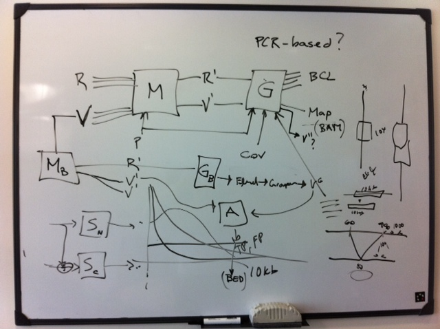
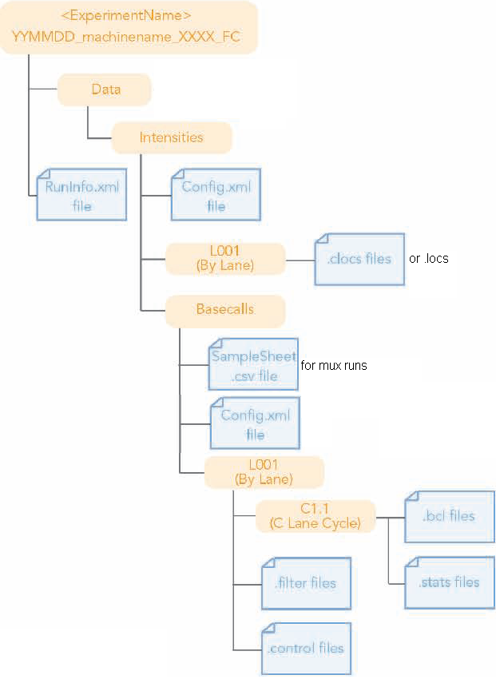
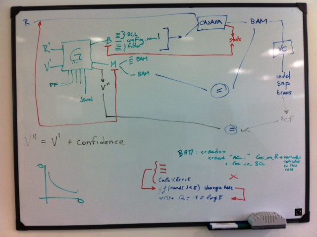
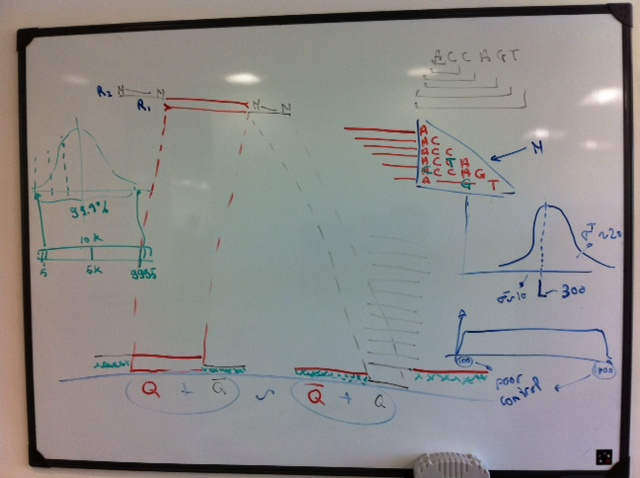

Introduction
This is EAGLE's sequencer simulator.
Pre-existing tools/knowledge
Brett's Persimmonator:

Earlier Persimmon from Tony:
PERSIMMON - Paired End Read SIMulator Module
Specifications
Inputs
Data:
- Nucleotide sequence (FASTA file) of the sample, usually coming from the Genome Mutator tool
- Which chromosomes are circular
- Adapters and sequencing primers sequences, to be used when insert size is too small and sequencing reaches those sequences.
- Run ID, Flowcell ID
Structure:
- Number of lanes
- Number of tiles per lane
- Tile naming method
- Number of cycles per read
- Organisation of reads and adapters inside clusters (as they appear in RunInfo)
- Number of surfaces and swaths
Distribution models:
- Read length distribution (mean&stdDev)
- If wanting paired reads: (See how RTA knows whether it needs to generate read pairs or not)
- Insert size distribution between 2 read pairs (mean&stdDev)
- If using mate pair library:
- Loop fragmentation size (mean&stdDev)
- Model of the loop fragmentation cutting point: mean&stdDev of the distance of the circularisation junction (biotin marker) compared to the middle of the 2 reads (see http://www.novocraft.com/wiki/tiki-index.php?page=Paired+Read+Modes)
- Quality scores model (cycle-based, distinct for each read)
- Model of Homopolymer runs affecting Q
- Model of Homopolymer runs affecting coverage
- Percentage of reads that pass filter
- Model of duplicated reads (poisson distribution?)
Quality thresholds:
- Coverage threshold file
RTA configuration files:
- RTAConfiguration.xml, HiSeq/GA/MiSeq Configuration.xml, RunInfo.xml: See below
Notes:
- No need for a model of Read orientation: use 50% in each direction
- No need for extra model of Read Pair orphans: we hope that it will modelled well enough by a 'N' model?
- Multiplexed runs: Do not implement at this stage.
Coverage parameter
At first we won't implement a real coverage/sampling distribution: we ignore the std dev and only implement the mean value.
This mean value is just used to infer the total number of reads required.
Note that the coverage value includes the duplicated reads, but doesn't include the reads that don't pass filter, so
TotalReadCount = GenomeSize*Coverage/(PassedFilterRatio*ReadLength)
Input Fasta file
In the ref fasta files, what do we do with bases like 'B'?
Do we "reduce" them to ACGT in the mutator, or do we properly transform them randomly in the sequencer?
Answer: If the mutator took care of them it's fine. Otherwise we randomly transform them in the sequencer.
Quality scores model
Tobias provided us with quality scores tables.
What we do with quality scores:
- Used in the BCL output
- Used to introduce sequencing errors: quality scores -> sequencing error introduced -> phase 1: random SNP, phase 2: ?
Quality of base 101?
table for more than 100?
Ask Tobias about value of adding error model to Q, as exact Q<=>error_rate may help the aligners too much.
Different qualities for read 2? What about barcode?
Same quality tables for mate pairs than for paired reads?
Coverage threshold file
The coverage threshold file will specify a list of positions or position ranges with a min and max desired coverage, in order to ensure certain quality features of the output:
- For our basic system tests, we would like to apply only one variant and control how much it appears in the output (i.e control the 'ease of detection' property) so that it is detectable.
- Another example is when we want to ensure that all translocations get at least n reads of coverage: we don't want to waste time re-running the sequencer simulation until they randomly becomes detectable.
- Ability to specify an area of zero/low coverage for some experiments.
RTA configuration files
RTA configuration files are most useful to provide the information needed to construct the Run folder.
However, we noticed that RunInfo.xml contains all the useful information, and could also be used as an input file.
The simulator will be able to parse 3 configuration file formats:
- RTAConfiguration.xml
- HiSeq/GA/MiSeq Configuration.xml
- RunInfo.xml
Many configuration items may be repeated between the files. If they disagree, an error must be issued.
Some configuration items may also be repeated as command line arguments, which will override those provided in the configuration files.
Adapters and sequencing primers
To be organised as described in http://www.illumina.com/Documents/products/datasheets/datasheet_sequencing_multiplex.pdf
Outputs
For CASAVA:
- Run folder

Notes:- In the prototype sequencer, the clocs files are not generated under a lane directory but directly in the Intensities directory with filenames such as s_8_0068_pos.txt
- Same for the filter files: they are generated in the BaseCalls directory with names such as s_8_0068.filter
- The control files are not generated at all
- The Run folder is made of many files that just report the configuration used by the sequencer. Those parameters are often not used by the simulator, but need to be passed as inputs nonetheless in order to generate those output files correctly. For example:
- Run ID (e.g. 100721_EAS16_0066_6264VAAXX)
- Run Number
- Instrument (can be extracted from Run ID)
- ValidationConfig.txt: needed for Casava's alignment stage, currently missing
Metadata for subsequent analysis:
- BAM files aligned on reference (at chromosome level? If yes, can they properly include translocations?)
- Achieved coverage thresholds file (based on the input coverage threshold file)
- V'', indicating a confidence score for each variant from the V' input
- More metadata useful for subsequent analysis?
Not needed / post-generated:
- BAM files aligned on the mutated genome can be generated afterwards by an external process (we don't know if they will be useful in any use case)
Data size and performance constraints
This section is analysing and setting constraints for a large use-case scenario:
- Human genome => 3.2 GBases in reference
- 60x coverage => 200 GBases
- 202 bases per paired read => 1G paired reads
- 8 lanes, 32 tiles/lane => 256 tiles => 4M paired reads/tile or 800 MBases/tile
Inputs
Input fasta files: 6.4GB for diploid human
Outputs
BCL files
- 4MB / BCL file
- 202 BCL files / tile
- 800MB / tile
- 256 tiles => 202*256 = 51,700 BCL files
- 200 GB total size
We need to generate this under 4 hours (Requirement is under 2 hours for 30x coverage)
BAM files
- ~300 bytes per read in SAM format => 600 GB uncompressed
- 10x compression to BAM => 60GB of BAM files
Metadata (minimum information to do BCL+Metadata=>BAM)
- 10 bytes/read? => 10 GB
Use cases
System level flow, used to figure out some requirements and use cases:

Use case 1: Using EAGLE to validate CASAVA Variant Calling
Use case 1a: User running the genome mutator
How does the user know which parameters to use?
Use case 1b: User running the sequencer simulator
How does the user know which parameters to use?
Use case 1c: User running CASAVA and validating results
After running the simulator, the user obtains a simulated Run folder and extra analysis files.
He then runs CASAVA and obtains an alignment and some called variants.
Manually, or by using an automated tool that we will implement later, the output variants can be classified as:
- Correct = correctly detected variants
- False negatives = variants that were simulated (i.e. present in the Genome Mutator's input variant list) but not detected by the tool under test
- False positives = variants that were detected without having ever been simulated
False Negatives analysis
Possible use case:
- How many reads cover the event? -> Easy with BAM and samtools
- If manual analysis: See them in IGV -> Easy with BAM
- If automatic analysis: How easy was it to detect this variant?
- Either report an "ease of detection" score that was calculated by the simulator
- Or calculate it now by analysing:
- Genome Mutator stage:
- On which alleles has it been applied? (and on how many alleles has it not been applied)
- How many other variants have been applied close to it?
- Sequencer Simulator stage:
- How many reads cover the event?
- Genome Mutator stage:
False Positives analysis
- Manually look at the area with IGV
Next step of analysis
Once the covering reads have been found, assuming that the coverage was enough, the user will want to know why either the aligner or the variant caller didn't do a proper job.
In order to analyse the aligner, we need to know exactly where in the BCL file each read is (lane, tile, position).
Cross references between files
The following files are expected to be used by the user:
- Variants1: Genome Mutator input
- BCL: Sequencer Simulator output
- BAM1: Sequencer Simulator output
- BAM2: CASAVA aligner output
- Variants2: CASAVA variant caller output
The use cases for results analysis are:
Variant from Variants1 -> IGV
Easy, by using variant's position
Variant from Variants1 -> supporting BCL reads
May seem trivial by using the position
Variant -> IGV B
BCL read -> BAM
BAM read -> BCL
BAM read -> reference allele+position
position ->
To be sorted
The 'Ease of detection/confidence' property
The analysis tools used to verify the output of the tested (external) tools will report:
- Correct items = correctly aligned reads / correctly detected variants
- False negatives = reads/variants that were simulated but not detected by the tool under test
- False positives = reads/variants that were detected by the tool under test without having ever been simulated
But more categories will be necessary as false negatives and false positives will need to be explained: some variants might be very well covered by other variants, or even not being covered by any read at all, making them undetectable, in which case we cannot expect any variant caller to detect them. On the other hand, some variants might be applied clearly, far from other variants and with a high coverage, in which case it will be important to highlight it if it happens to be an undetected false negative.
The 'Ease of detection' property is intended to reflect this, to be used to explain the "why" question for each false negative.
What affects the 'Ease of detection'?
- Number of reads (coverage) (if no BCL reads covers the event, ease_of_detection should probably be 0)
- Number of events around it
- Number of times the k-mers including this event are present in the reference: a read in a repeated region will be harder to align correctly
Unsorted, from meeting 24/10/2011
Input to tool: Model Q, model noise
A few strategies are possible for efficient BCL writing:
- Thing to avoid: opening 100 bcl files and writing 1 byte in each at a time
- per tile: prepare all reads in RAM, then output BCL files for this tile in parallel with the processing of the next tile
- per BCL file: read all inputs to RAM, and then process and write each BCL in order
We can use highly multithreaded writing threads, but this needs to be configurable as tool input, as isilon will deal best with hundreds, while a local HD will be happier with 1.
RAM usage:
- The 6.4Gbases of FASTA can be stored in RAM from the start, especially if we use 2 bits per base.
Multiplexed output: Can be ignored in phase 1's implementation, but will need to be given some thoughts for:
- command line arguments: how do we let the user specify all this potential mess?
- "User should be able to specify which sample goes in which lane"
- RAM usage: multiple references can quickly use a lot of RAM.
Running time:
- Writing human BCL at 30x coverage = 100GB @ 30MB/s = 1 hour
- We should be able to keep Writing+Processing under 2 hours
Don't produce BAM: Produce BCL metadata (in binary format) from which BAM will be made
Meeting 28/10/2011
- Include adapter sequence when insert size is too small, then add most-common-color with low quality
See: - Generate coordinates with poisson distribution (using matrix at pixel resolution (or sub-pixel, later, for more noise modelling) or bernouilli process)
- at the edges of each tile, model that the cameras won't see all the pixels, and that some cameras will have slighty different views, leading to some 'N' at the outside, then same letter many times, then the correct letters)

Validation
Investigate whether the simulated sample genome and reads are representative of real sequenced data, and which kind of input variants and parameters are needed to make them so.
{kind=link}
{kind=link}
{kind=link}
{kind=link}